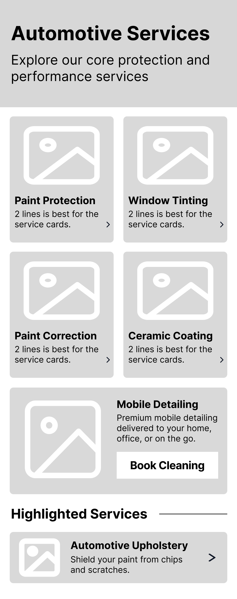
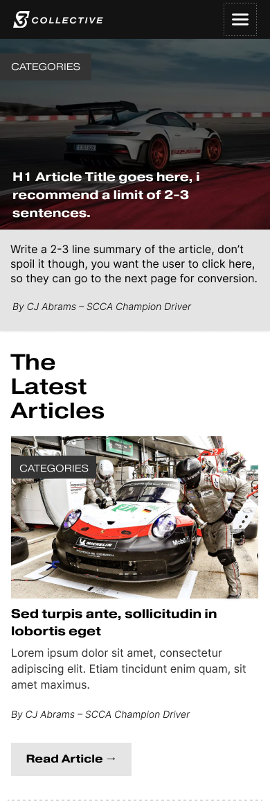
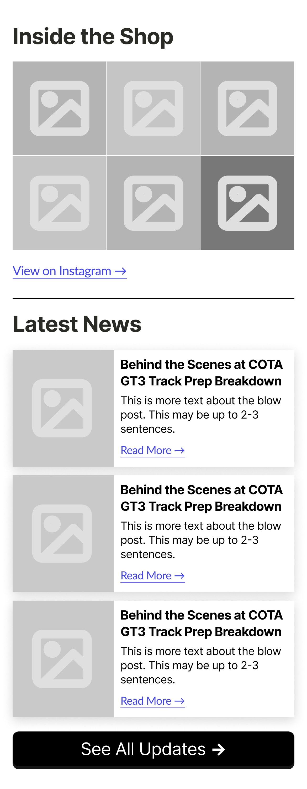
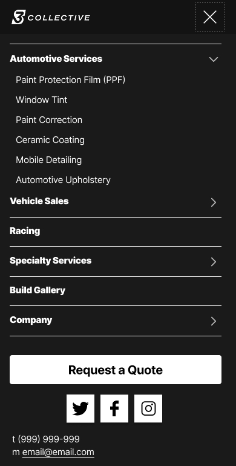
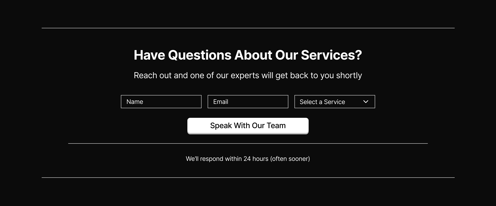
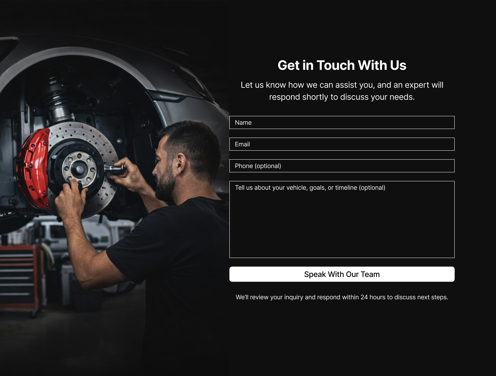
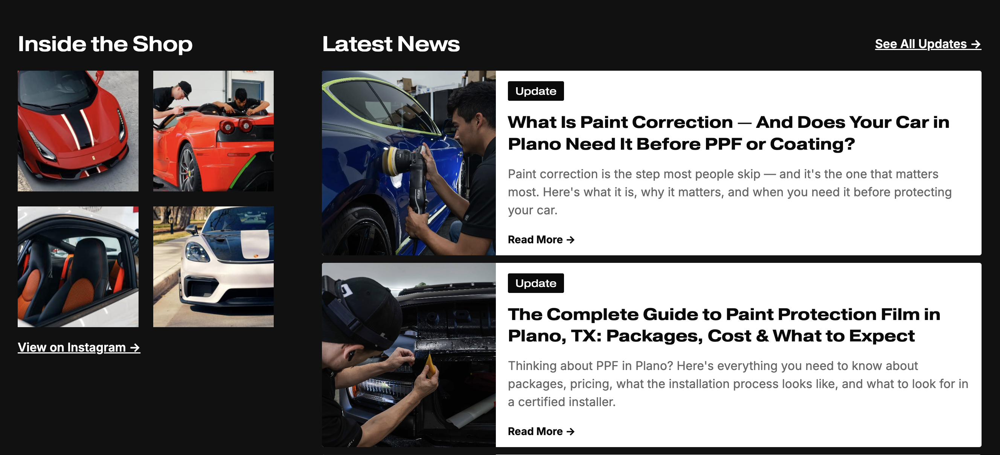

Case Study
S Collective
Overview
Translating Real-World Demand Into a High-Performance Digital Experience
S Collective is a motorsport and automotive lifestyle brand based in Plano, Texas. They sit at the intersection of high-performance driving and premium vehicle services — think ceramic coatings, paint protection, track coaching, and vehicle sourcing for a clientele that cares deeply about their cars.
They had strong traffic. They had a loyal customer base. But the website wasn't converting at the level the brand deserved. That's where I came in.
I was brought on as a Product Design Consultant for a six-week engagement, focused on redesigning the Homepage, the Racing page, and building out new supporting pages — all with one goal: turn more visitors into leads.
Performance tracking through Google Analytics 4 and Microsoft Clarity was planned from the start, so we could validate every decision with real data after launch.
The Problem
Clear Demand, but Friction Standing Between Visitors and Action
The first thing I did was audit the existing site. Not a surface-level review — a structured analysis focused on three things: first impressions, trust signals, and conversion pathways. What I found shaped every design decision that came after.
Service segmentation across track, automotive, and vehicle sales wasn't immediately clear. Visual hierarchy needed strengthening to better prioritize information and primary conversion points. Trust signals weren't showing up at the moments that mattered most. Conversion pathways needed restructuring to support different user intents. And the site needed new supporting pages to increase both conversion and user retention.
The focus wasn't to add more — it was to refine the experience. Reduce friction, and guide users with greater clarity and confidence.
Live Experience
The Final Homepage in a Real-World Context
Research & Audit
Early Insights That Shaped the Conversion Strategy
The process began with a structured review of S Collective's existing website, focused on understanding how the current experience handles first impressions, builds trust, and guides users toward inquiry.
This early discovery surfaced key areas where the experience could be refined before moving into design exploration.
The audit focused on first impressions, trust, and lead conversion — identifying where the experience could better guide high-intent users toward action.
Download Full UX Audit (PDF)
Key Focus Areas
The review centered around three core areas. First, messaging clarity — how clearly the site communicates its services, positioning, and target audience. Second, trust and credibility — how effectively the experience builds confidence in high-value, high-trust services. And third, conversion pathways — how intuitively users move from initial exploration to taking action.
Research Approach
Findings were organized to identify patterns across messaging, visual hierarchy, and conversion flow — helping inform a more structured and cohesive experience moving forward.
Audit Finding #1
Hero Section: Messaging & Calls-to-Action
The hero section had no clear value proposition. It was visually strong — beautiful cars, cinematic footage — but a first-time visitor had no idea what S Collective actually does, or what to do next. No primary call-to-action was visible on first load.
There was an opportunity to more explicitly communicate S Collective's services and specialties. Users could engage with the visuals without ever understanding how to proceed.

Audit Finding #2
Service Discovery & Carousels
Core services were hidden behind a carousel. Users had to click through to discover what was available — most never did. The full range of services had an opportunity to be more immediately visible, and high-value offerings were essentially invisible.

Audit Finding #3
Brand Authority & Trust Hierarchy
Trust signals — client logos, testimonials, credentials — were buried below the fold. For a business selling high-ticket services, credibility needs to show up in the first few seconds, not after three scrolls.

Audit Finding #4
Mobile Performance
And then there was performance. The homepage was loading around eighty megabytes of hero video on mobile. That meant five to eight second load times. Users were bouncing before they ever saw a word of content.


Personas
Three Distinct Visitor Mindsets, One Unified Experience
From the research, three distinct user personas emerged. First, the Exotic Owner — high-net-worth, protective of their vehicle, looking for premium quality and trust. They need to see proven results immediately. Second, the Track-Day Driver — performance-focused, technically minded, evaluating whether S Collective has the engineering expertise to support their goals. And third, the New Enthusiast — earlier in their journey, exploring upgrades, but with lower confidence. They need education, reassurance, and clear entry points.
The redesign had to serve all three — without forcing any of them down a path that wasn't theirs.


Three Strategic Focus Areas
Clearer Value, Earlier Trust, and a More Direct Path to Conversion
That led to three strategic focus areas. One: clarify the value proposition — make it obvious within seconds what S Collective does and who it's for. Two: introduce trust earlier — move credibility signals like logos, results, and social proof up to where they matter, right after the hero, when users are deciding whether to stay. And three: create a more direct path to action — reduce friction, fewer clicks between interest and inquiry.

Key Observations
Through early discovery, several patterns confirmed this direction. Messaging needed to show up earlier so users could quickly understand the offerings. Trust signals were far more effective when introduced at the top of the experience. Interaction-driven layouts like carousels were limiting visibility of core services. Conversion opportunities could be surfaced much sooner for high-intent users. And mobile performance was playing a critical role in first impressions and engagement.
Wireframes
From Discovery Insights to Structured, Conversion-Focused Layouts
The wireframe phase was where everything started coming together. I used wireframes to translate discovery insights into clear, testable layouts — focusing on structure, hierarchy, and conversion flow before touching any visual design.
Restructuring Navigation Around User Intent
I restructured the navigation around user intent — grouping services more clearly, simplifying labels, and elevating the primary call-to-action so it's always visible.
The logo placement was adjusted to reinforce brand presence, while primary and secondary CTAs were introduced to support both immediate action and concierge-style engagement.

Unclear hierarchy and generic labels → Requires interpretation before action

Clear service grouping and elevated CTA → Enables fast scanning and immediate action
Redesigning the Hero
The hero was rebuilt from scratch. Instead of a static carousel, we designed a system that tells S Collective's story passively — aspiration, then credibility, then capability.
Early wireframe exploration focused on defining the value proposition, introducing trust cues, and establishing a clear conversion hierarchy.

Component-first planning helped define the information hierarchy before visual design began.

Rapid iteration refined layout, messaging, and CTA placement before moving into final UI.


Key Improvements
- Clarified the value proposition at first glance
- Introduced trust earlier in the experience
- Strengthened the primary path to action
- Added a direct map link for mobile visit intent
The final hero translates early wireframe decisions into a clearer, trust-building first impression with a stronger path to action.
Designing a Hero Video
The hero video was designed to support the experience without competing with it. Its role is to establish credibility within the first few seconds, communicate brand tone and real-world capability, and reinforce the primary call-to-action through context — not distraction.
The intent was to build trust and aspiration quickly, while allowing the interface to remain clear and actionable.
The original homepage hero relied on a static carousel. We replaced it with a produced twenty-second video that tells S Collective's story passively — it plays automatically, communicates the brand, and supports the interface without competing with it. The video was built with a UX narrative structure: Aspiration, then Credibility, then Capability.
Mobile-First Layouts
Mobile layouts were designed with a focus on clarity, performance, and progressive disclosure. Every screen was validated at 390px before moving to desktop.




UI Design
Every Module Designed to Keep Users Moving Toward Conversion
The homepage was rebuilt as a conversion system — not a brochure. Each module serves a specific role in the user journey, and every element earns its place on the page.
Dual Conversion System
Below the hero, I designed a dual conversion system. Two modules, each testing a different hypothesis. Module A leads with authority — credentials and trust signals at the top. Module B leads with intent — services and CTAs front and center. This gives us a framework to measure which approach converts better post-launch.

Module A: Authority-first approach emphasizing credentials and trust signals at top of page

Module B: Intent-first approach leading with service offerings and immediate CTAs
Social Media Integration & Blog System
We also added a live social media feed directly on the homepage. It pulls in S Collective's most recent posts, showing visitors the brand is active and current. That's a trust signal in itself.
And we built an entire blog system — surfaced through a homepage module — to drive SEO, establish authority, and keep users engaged longer. When blog posts embed YouTube videos, it creates a content loop across Google and YouTube.

Intent-Based Contact Page
The contact page got a complete rethink. Instead of a generic form, we designed an intent-based system. Users select their need — Mechanical Services, Race Prep and Coaching, or Vehicle Sourcing — and the form adapts. This routes higher-quality leads and gives the team immediate context.

Racing Page
Designed for Two Audiences at Once
The Racing page was one of the most interesting design challenges. Two very different audiences — first-timers who are curious but hesitant, and experienced enthusiasts who already know the sport. First-timers need approachability and reassurance. Enthusiasts need credentials, technical depth, and proof that S Collective operates at their level.
The solution was a single page that serves both. The structure leads with approachability, then layers in credibility. Both user types reach their primary action without scrolling past content that isn't relevant to them. It became one of the highest-converting pages in the redesign.
The Racing page structure was validated against both personas — reducing hesitation for first-timers by leading with approachability, and increasing confidence for enthusiasts by surfacing professional credibility before conversion. A single page serving two distinct intents, without compromise.
Technology & Optimization
Under-the-Hood Upgrades That Make the Site Faster, Lighter, and Scalable
On the technology side, performance was non-negotiable. A redesign that looks better but performs worse isn't a redesign — it's a liability.
Mux — Video Performance Optimization
Replacing Heavy Video Assets With Streaming Infrastructure to Improve Load Speed
The biggest win was replacing those heavy video files with Mux — a streaming-based solution that dynamically serves optimized video quality based on the user's device and network conditions. Same visual impact, dramatically faster load times.
Implementation
Concept to Delivery in Six Weeks
Design, development handoff, and content migration ran in parallel across a six-week timeline.
Deliverables
The full engagement delivered a UX audit with annotated findings, user personas and journey mapping, desktop and mobile wireframes, high-fidelity Figma prototypes, a complete navigation and information architecture restructure, a produced hero video, a blog system, a social media integration module, an intent-based contact page, Mux video streaming integration, and full developer handoff documentation. All in six weeks.
Expected Impact
Designed to Convert — Built to Measure
Every design decision in this project was made to reduce friction, build trust faster, and shorten the path from interest to action. Our target is a twenty to forty percent increase in conversions within ninety days of launch. And we're not guessing — we're measuring.
What We're Measuring
GA4 (Google Analytics 4):
We've configured Google Analytics 4 to track CTA click-through rates, form completion rates, session duration, scroll depth, and full user path analysis from landing to form submission.

Microsoft Clarity:
We've set up Microsoft Clarity for session recordings, heatmaps, rage click detection, and mobile versus desktop behavior comparison.

At the thirty, sixty, and ninety day marks, we'll review the data against that conversion target and optimize. This isn't a launch-and-leave project.
What's Next
The Launch Is the Starting Line — Not the Finish
The launch is the starting line — not the finish. With the redesign complete and tracking in place, the next phase is optimization. Based on the first ninety days of data, we'll identify which conversion paths are performing, which pages have the highest drop-off, and where the next round of improvements should focus.